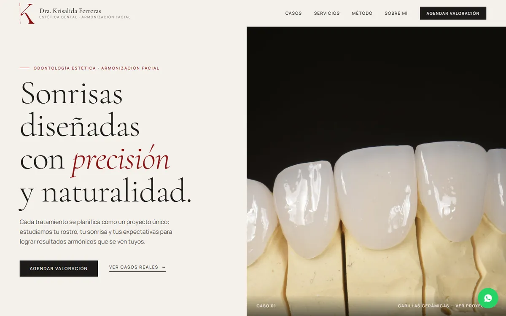
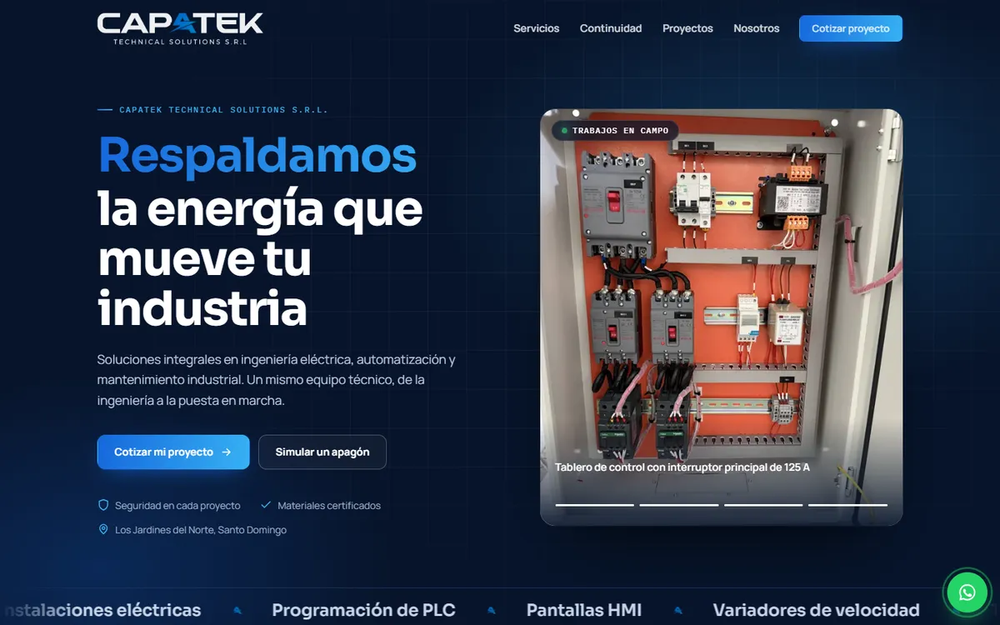
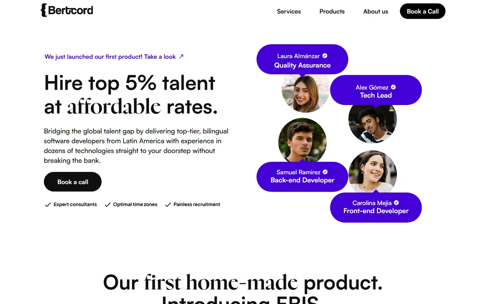

HR, payroll & ERP integrations
Webhook and API syncs between ADP, Paylocity, Greenhouse, CMiC, AxisCare and the rest of your stack, on Azure Functions and queues, with signature checks, idempotency, retries and poison handling.
Senior full stack engineer with 9+ years shipping enterprise software for banking, healthcare and government. For US companies I connect HR, payroll and ERP platforms (ADP, Paylocity, Greenhouse, CMiC) on Azure, and I secure systems to the standards regulated teams need.
Built software for
Platforms integrated
Working with Rafael has been a huge pleasure. He communicates well, does excellent work, and manages himself without being asked. I would recommend him to anyone!!
5.0/5
on every rated Upwork contract, endorsed for clear communication and accountability for outcomes.
Read reviews on UpworkServices
I'm strongest where reliability and security matter more than hype: systems that move money, health data or payroll between platforms.
Webhook and API syncs between ADP, Paylocity, Greenhouse, CMiC, AxisCare and the rest of your stack, on Azure Functions and queues, with signature checks, idempotency, retries and poison handling.
New ASP.NET Core services and rebuilds of legacy .NET Framework apps using Clean Architecture and CQRS, with automated deployments.
PCI DSS controls, sensitive-data encryption, LDAPS, IdentityServer and vulnerability remediation, learned inside two Dominican banks.
Parameterised Azure Data Factory pipelines that pull from OAuth- and mTLS-secured REST APIs, page through results and load incrementally into ADLS Gen2 and SQL Server.
Business portals and internal tools in Angular, React / Next.js or Svelte on a .NET or Node backend, plus fast, hand-built marketing sites.
OCR and ML pipelines that turn invoices and documents into validated, structured data. Backed by a master's in Logic, Computation & AI.
Selected work
Client integrations, open-source references, live client sites and a production tool. Enterprise work under NDA is summarised further down.
A US home-care organisation with several locations was re-typing every new hire from Paylocity into AxisCare. I built a serverless integration that does it on its own, and published a sanitised template of the architecture.
A US client wanted its HR and recruiting data out of ADP and Greenhouse and into its data lake. I designed and built an Azure Data Factory platform that lands both in Azure Data Lake Storage Gen2 on a schedule.
A reference build of the classic system-design question, taken all the way to running code: read-heavy redirects, a separate write path for analytics, and a typed Angular front end.
Dominican businesses must file every purchase invoice in the DGII's Form 606 each month, usually by hand. This Telegram bot reads photos or PDFs of invoices and produces the official spreadsheet and the TXT file ready to upload.

Editorial-style site for an aesthetic dentist: case galleries, services and a booking flow straight to WhatsApp. Hand-built with no framework and served from Cloudflare's edge.

Lead-generation site for an electrical and automation contractor, with a project gallery, quote requests and an interactive "simulate a blackout" feature that explains backup power.

Corporate website for a nearshore development firm, built from the designer's Figma mockup into a responsive site with services, FAQs, a quote form and the launch of its EBIS product.
Banco BHD · 2024–now
Security work on the bank's business applications, a .NET service that converts SharePoint DOCX documents to PDF, automated deployments and mentoring through code review.
Upwork client · 2025–2026 · ★ 5.0
Connected a construction ERP (CMiC) with ADP payroll across several business modules, working independently with the client's team.
Upwork client · 2025–2026 · ★ 5.0
API development and integrations plus Next.js / MERN features over a long-running engagement, endorsed as solution-oriented.
Bertcord · 2021–2024
On Bertcord's EBIS ERP (.NET + React): a shared page layout across its modules, role-based permissions on the API and the Cypress E2E suite. Raised warehouse efficiency by 50%.
Humano ARS · 2023
As software architect: led technology selection, wrote the architecture docs and built the Angular + .NET portal with webhook-driven Azure Functions.
Banco BHD León · 2019–2021
Implemented PCI DSS requirements, replaced insecure protocols with HTTPS/SFTP and made corporate transaction services 30% faster.
Toolbox
Master's
Logic, Computation & Artificial Intelligence
University of Seville · 2021–2022 · thesis pending
B.Eng.
Software Engineering
Universidad APEC · 2014–2018
Languages
Spanish (native), English (professional)
Worked on teams in the DR, Spain and the US
Contact
Tell me what you're building or what's breaking. I take contracts through Upwork or directly, and I'm open to full-time remote roles.